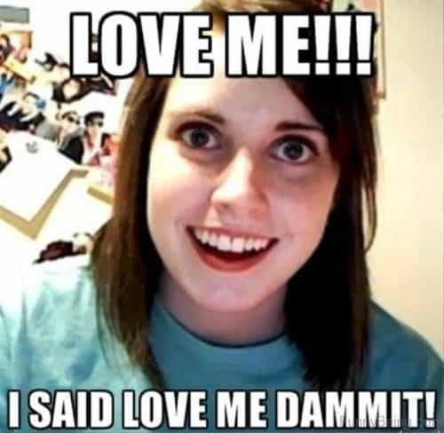

Jared is a middle-aged guy full of old-man wisdom. He's best described as a gentlemen scholar and a man among men. You can read his writing at his site: Legends of Men


A surprising amount of women have rape fantasies. If you don’t understand that true statement you have a great deal of company. Researchers and scientists have been baffled by this counter-intuitive phenomena as well.
There’s been quite a bit of research on this topic over the last 40 years. In their analysis of rape fantasy research titled “Women’s Erotic Rape Fantasies: An Evaluation of Theory and Research,” published in the Journal of Sex Research in 2008, Joesph Critelli and Jenny Bivona present several theories explaining why women have rape fantasies.
This is the most common explanation for women’s rape fantasies. Essentially, a woman will want to sleep with a man, but because she may gain a reputation as a slut or because it may involve cheating or any other social consequences, she won’t actually do it. The fantasy involves the desired man raping her so that she gets sex with him without any social consequences.
The support:
There’s not much. The feelings of guilt aren’t avoided if they are present when women have rape fantasies. The research suggests the opposite. Women who have feelings of guilt do not have rape fantasies, they are less sexual and less prone to sexual fantasies in general.
Red pill wisdom:
We all know women want plausible deniability. This allows them to have sex with men but still act like “it didn’t count” in their heads. With the ongoing cultural decline and female empowerment, women need plausible deniability less than ever. Women are not taught shame anymore. They are taught empowerment. You won’t find any Cosmo girl who needs plausible deniability. If the modern woman wants to be degraded, she goes for it.

This theory states that women who are open to sexual experimentation are more likely to have rape fantasies. The more open they are to unique and frequent sexual experiences, the more likely they are to have rape fantasies.
The support:
There is some support for this theory. The problem with it is that it doesn’t explain why force and non-consent are part of the fantasy.
Red pill wisdom:
We’ve all been with some freaks—girls who liked to be choked, degraded, humiliated, etc. A woman who has rape fantasies might be just another freak.

In this explanation, women want to be so desirable that men just have to have them, even if that means rape.
The support:
There is also some support for this. The problem is that these theories are not mutually exclusive. For example, women also fantasize about being desired by many men (and servicing them simultaneously), and role-playing as a more desirable woman. These provide evidence for this theory but they may also be part of the previous theory.
Red pill wisdom:
We all know women want attention. They’ve even replaced it with love across some demographics. But we’ve yet to see any evidence that attention results in sexual stimulation rather than just ego stimulation, which is more important to the modern empowered woman.

Women have rape fantasies because the patriarchy has taught them from birth that they are sexual objects. Men will have sex with them whether they like it or not, so they have been taught by the patriarchy to want to be raped.
The support:
Men do not fantasize of rape from the perspective of the rapist. In fact, more men have fantasies about being forced to have sex with women.
Red pill wisdom:
Red pill men never have and never will desire to rape women.
Male dominance/female surrender is common in the animal world. There may be a similar dynamic in human mating.
The support:
The biological argument is one that has not been tested yet. There are other theories you’ll see in evolutionary psychology textbooks on the evolution of rape (orangutans do it, for example), but hypotheses based on biological theories require further research.
Red pill wisdom:
As a general rule, all women like rough sex. The question is, where does rough sex become rape? In the majority of rape fantasies, as outlined in another study about rape fantasies by Joesph Critelli and Jenny Bivona, a woman imagines a handsome man desiring her and courting her. She refuses and he non-violently dominates her. She doesn’t provide physical resistance, though she may say no again. In the fantasy that doesn’t stop him.
It comes back to that joke of a woman saying “no” during sex, causing a guy to stop giving her the business. Then she looks back and says, “Why’d you stop?”
A woman fantasizes about a handsome man being her good husband. The man wants her too, but only sexually. He rapes her in the manner described above, but she sticks with him. Eventually, he wants her for more than just sex and transforms from a sex-crazed rapist to a loving husband.
The support:
The support for this argument came from an analysis of rape scenes in romance novels. One review found rape scenes in 54% of them.
Red pill wisdom
When women desire the sex-crazed dominant man, they are pursuing an alpha-fux strategy. When women approach the wall they will begin to pursue the beta-bux strategy. If they can change an alpha who pleases them sexually into a beta who supports them, they will. That’s part of the fantasy. But how many alphas let themselves be manipulated like that?
Rape is wrong. Don’t do it. With that being said, if the rape of women’s fantasies doesn’t sound like rape to you, that thought also occurred to the researchers. Women rarely, if ever, fantasize about being beaten by some syphilitic crackhead who forces dry sodomy on them. They want handsome, dominant men to desire them and they want a man who won’t give up on pursuing them easily. If she says no, leave it at that, but if you’re a handsome dominant man she probably won’t want to say no.
For more from Jared Trueheart on the roles of men and women in literature and film check out his writing at Legends of Men.
Read More: Why Do Women Have Rape Fantasies?